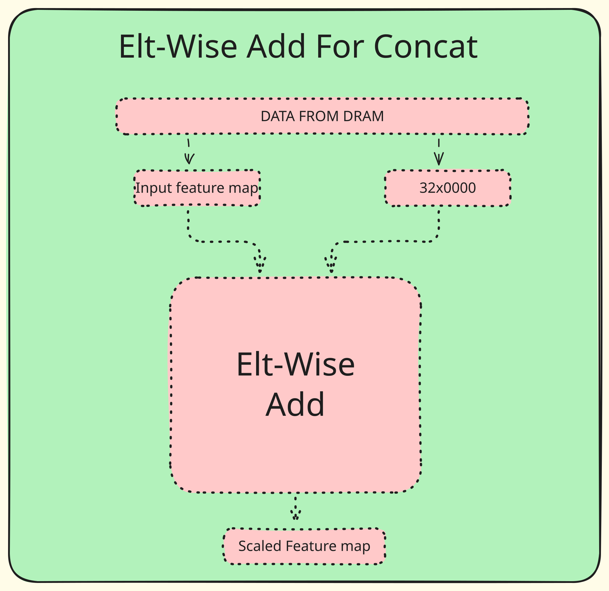
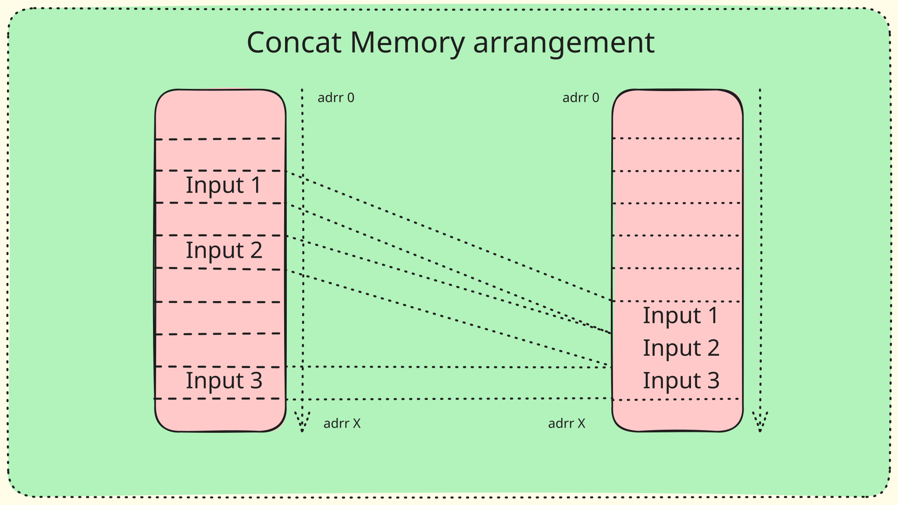

CONCAT¶
Overview¶
This mega block performs concatenation of up to four input layers in a channel-wise manner.
At its core, concat is a memory read–write operation without computation. Multiple input feature maps are simply arranged contiguously in the channel dimension.
Q-linear Concat¶
Q-linear Concat, or Quantized-linear Concat, is a quantized version of the concat operator that additionally requires scaling each input tensor with its respective scale.
{kind=link}

Architecture¶
To implement the above-mentioned operator in the GATI infrastructure, two operations are required:
1.Scale multiplication
2.Channel-wise concatenation
1. Scale Multiplication¶
Multiplication is an operation that demands a high number of resources in terms of DSPs and LUTs. Therefore, the design focuses on reusing existing multiplication-capable operators.
One such operator that performs scale multiplication natively is ELTWISE. Hence, the ELTWISE (addition) operator is reused for scale multiplication. Since the native behavior of ELTWISE addition is to add two scaled inputs, the second input is scaled with zero, which results in the required scaled input at the output.
{kind=link}

Thus, for every input feature map in a concat operation, there is a corresponding ELTWISE operation prior to it. For example, if there are three input feature maps, then three ELTWISE addition layers are required.
2. Channel-wise Concat¶
The concat operation itself is straightforward. Conceptually, the process is as follows:
Read data from DRAM for the first input feature map
Write it back to DRAM
Read the second input feature map
Write it to a continuous address range following the first input
{kind=link}

Implementation Details¶
The concat operator consists of the following modules:
Concat Controller
Concat Length Switcher
Concat Address Switcher
Top Concat
Request Controller (Concat)
Like every other mega block, Concat has a request controller and a memory read controller for reading input data from DDR. However, a new feature is introduced here: the addresses to be read are not continuous.
To handle this, the request controller must read data from multiple non-contiguous addresses.
To manage this address switching, the Concat Address Switcher is designed. This module monitors the request address controller and, once the current feature map has been fully read, it updates the address for the next read request.
Stop Address Calculation¶
The most critical computation in concat is the STOP address calculation.
GATICC provides the following instructions for each of the four feature maps:
Start Address – Start address for the current input
KN – Number of kernels / channels
IH – Input height / width (It is assumed that inputs are square. Rectangular inputs will be supported in the future and will require ISA changes.)
IN-NUM – Number of concats (out of the maximum four inputs)
Using these parameters, the offset and stop address are calculated as follows:
offset_1 = CONCAT_KN_1 * CONCAT_IH_1 * CONCAT_IW_1;
CONCAT_StopAdd_1 = offset_1 + CONCAT_StartAdd_1;
Concat Controller¶
The Concat Controller performs a simple task: it reads 256-bit packets from the DRAM FIFO and writes them to the DRAM output data aligner FIFO.
While doing so, it also calculates the total number of elements written per layer. This allows the system to detect when the current input feature map has finished and when the length should be switched to the next input feature map.
There is no computation in the concat mega block—only memory read and write operations, as described above.
Limitations and Assumptions¶
The number of input channels for each feature map must be a multiple of NSA. If this condition is not met, the concat operation will fail.